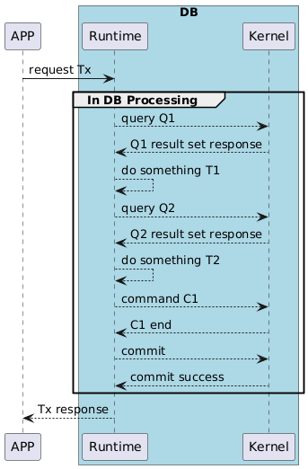

Mudu 过程#
1. 设计目标#
Mudu 过程将交互式执行与存储过程统一为单一的数据本地编程模型。目标如下：
数据本地性：在数据所在位置执行业务逻辑，以最小化跨工作者通信。
开发者体验：允许使用现代语言和熟悉的顺序代码模式实现过程。
安全与隔离：在 WASI 沙箱中运行用户逻辑，并通过显式系统调用限制访问。
性能：通过异步运行时和每工作者亲和性，实现低延迟、高并发的工作负载。
2. 交互式执行与存储过程——以及统一模型#
传统的交互式执行（REPL / 客户端驱动）是即时且灵活的，但通常会产生远程调用和更高的延迟。存储过程是预先部署的、靠近数据运行的服务器端代码，但通常受限于专用语言和部署模型。
Mudu 过程将两者统一：
相同的过程代码可以由客户端以交互方式调用（即席调用），也可以像存储过程一样安装并调用。
运行时支持细粒度的系统调用，使过程代码能够在不离开沙箱的情况下执行数据库操作。
这意味着开发者可以进行交互式原型设计，然后将相同的代码发布为具有数据本地性和运维控制的部署过程。
下图展示了两种执行模型以及 Mudu 如何将它们统一为单一的基于 WASI 的执行流程。
交互式调用（左侧）：客户端发送单个查询和命令，每一步都伴随网络往返。
存储过程部署（右侧）：应用程序发送单个请求；所有查询执行、逻辑处理和提交都在数据库运行时内部以数据本地方式完成。


两者都汇聚为单一的基于 WASI 的执行流程，过程在其中调用系统调用，而内核协调事务和路由。
3. WebAssembly / WASI 编译与运行时#
Mudu 将过程编译为 WebAssembly（WASI）模块，并在沙箱化运行时中执行它们。
为什么选择 WASI？
可移植性：WASI 模块与平台无关、与语言无关。
沙箱化：内核控制系统调用和 I/O 表面，以强制执行安全和资源限制。
工具链：多种语言可以面向 WASI 编译，从而实现多语言支持。
典型工具链流程：
使用支持的语言编写过程（目前已有 Rust 示例）。
构建/编译为 WASI 模块（wasm-ld / rust + wasm32-wasi 目标）。
可选地通过 mudu-transpiler 运行以应用 color-bind 转换（见下文）。
部署模块（将 mpk/包放入 mpk_path）并向内核注册。
以交互方式或作为存储过程调用；内核处理系统调用、事务和路由。
运行时暴露了一组紧凑的系统调用（打开会话、get/put/range/query/command/batch 等）。过程使用这些系统调用与数据库状态交互；所有网络和存储访问都由内核中介。
4. 多语言支持#
与许多绑定到嵌入式语言（SQL/PLSQL/PLpgSQL）的传统存储过程环境不同，Mudu 过程计划通过面向 WASI 来支持多种高级语言。
当前支持的实现示例：Rust。
未来：其他可以生成 WASI 模块的语言（C/C++、Zig、AssemblyScript、Go（wasi 支持待定）等）。
这为利用现代语言生态系统、包管理器和开发者工具打开了大门，同时保持执行的安全性和可移植性。
5. Color-bind async/await：语言体验与运行时#
Mudu 采用“color-bind”模型，其中异步是运行时特性而非强制的语言构造：
开发者编写顺序的、看起来同步的代码，以提高清晰度和可维护性。
mudu 工具链（mudu-transpiler / 编译器遍）将阻塞式系统调用重写或转换为异步兼容调用（await 点），作为构建流水线的一部分。
这在精神上与 Zig 的方法类似，即运行时可以提供异步模型，而源代码保持简单。
优势：
开发者体验：编写直接的代码，无需手动管理异步状态机。
运行时效率：生成的 WASI 模块与宿主异步运行时（io_uring / Tokio）协作，以实现高并发。
转译器在底层将系统调用重写为异步系统调用，以便运行时可以在等待 I/O 或远程 RPC 时让出执行权。
6. 其他注意事项#
调试与测试：开发者工作流包括本地 WASI 执行、单元测试和交互式会话调试。工具链尽可能提供源码级调试辅助。
资源限制与配额：内核对每个过程强制执行 CPU、内存和系统调用配额，以维持隔离。
权限与审计：过程通过元数据（所有者、版本）注册，并可以通过能力集进行限制；审计捕获调用和系统调用跟踪。
版本控制与热交换：模块在 mpk 打包模型中进行版本控制；运维工作流支持滚动部署和会话的优雅排空。
参考与示例#
系统调用参考请参见 系统调用参考，包括
mudu_open、mudu_get、mudu_put、mudu_query、mudu_command等。WebAssembly 组件模型与 WASI 沙箱请参见 WebAssembly 集成。
如何构建与安装
.mpk包请参见 应用包。客户端、内核和工作者之间的可视化流程请参见文档中的架构图（
/_static/procedural_tx.png）。
Mudu 过程概述结束。